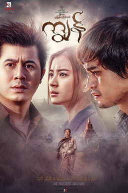

|  |
Kyun also known as A Mhaung Tway Ywar Cha Tae Moe Tain is a 2017 Burmese drama film, directed by Nyunt Myanmar Nyi Nyi Aung starring Nay Toe, Wutt Hmone Shwe Yi and Myint Myat, Ye Aung and Soe Myat Thuzar. It is about the Pagoda slave who was the great slave in Burmese history of Pagan.
The film,produced by Aung Tine Kyaw Film Production premiered in Myanmar on May 26, 201 |
| Year | Award | Category | Nominee | Result |
|---|---|---|---|---|
| 2017 | Myanmar Motion Picture Academy Awards | Best Supporting Actor | Myint Myat | Won |